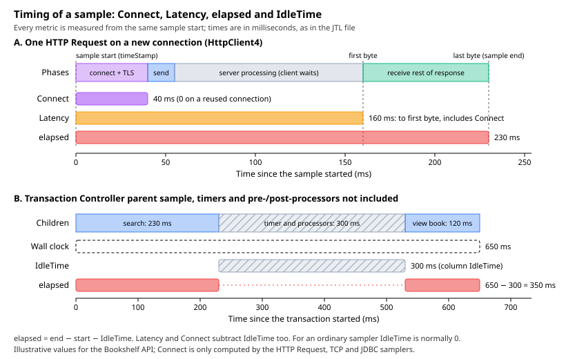

Listeners & Results Files
|
This content was generated with the assistance of AI and should be verified against the official documentation before being relied on in production. |
This page was written against Apache JMeter 5.6.3 (latest release on 2026-10-14; it runs on Java 8 and later, Java 17
or later is recommended), with the differences planned for JMeter 6.0 noted where they matter. JMeter 6.0 is not
released: the planned changes come from xdocs/changes.xml on the master branch, need Java 17 or later (Java 21
recommended) and are described as planned, not as shipped behaviour. The JSR223 Listener example uses the Groovy engine
bundled with 5.6.3. No plugin is needed for anything on this page; the plugin graph listeners from jmeter-plugins.org
(Plugins Manager 2.0) are mentioned only for comparison.
The books on the market (JMeter 2.11 to 3.0) still present GUI listeners and plugin graphs as the main way to report a
test. Since then, results files gained the sentBytes, Connect and IdleTime columns by default, sub-results are
written to CSV, several listeners were removed, and the HTML dashboard became the reporting tool. Every field,
property and default on this page is taken from the official user manual (Listeners, Glossary), the component
reference (section 18.3, Listeners) and the properties reference. Where those pages disagree with the shipped 5.6.3
bin/jmeter.properties or with the source code, the page says so and gives the behaviour of 5.6.3.
The running example is the Bookshelf load test, bookshelf-load.jmx: a Thread Group named Bookshelf users with 50
threads, a 60 s ramp-up and a 660 s scheduler duration, running the journey log in, search, view a book, create a loan
and view the loan against the local Bookshelf API.
What a listener does
A listener is a test element that receives every sample result in its scope after the sampler, its post-processors and its assertions have finished. What it does with each result depends on the listener: show it in a tree or a table, aggregate it into statistics, draw a graph, write it to a file, or run a script. Most listeners do several of these at once: the component reference describes them as elements that view, save and read results.
All listeners that write files write the same raw data. A View Results Tree and a Summary Report pointed at the same
file name produce an identical file; only the on-screen view differs. The format and the columns of that file are
controlled by the Configure button of the listener (the Sample Result Save Configuration) and, for defaults, by the
jmeter.save.saveservice.* properties described below.
Where a listener sits and what it sees
A listener follows the normal scoping rules, with one particularity stated in the component reference: listeners are processed at the end of the scope in which they are found. In practice:
-
a listener directly under the Test Plan sees every sample of every Thread Group, including setUp and tearDown Thread Groups;
-
a listener under a Thread Group or a controller sees only the samples below it;
-
a listener as the child of a single sampler sees only that sampler, which is the documented way to record only some samples (or wrap a set of samplers in a Simple Controller and put the listener there);
-
the listener added by
-lon the command line sits above the Test Plan and therefore sees everything.
Listeners always run after assertions, so the success flag they record is final. The full execution order is on
Test Plan Elements, Execution Order & Scoping.
Several listeners may write to the same file; the user manual allows it as long as they all use the same save configuration. In 5.6.3 a result is written only once per file name even if two listeners in scope point to the same file.
Listeners in GUI mode and in CLI mode
In GUI mode, every enabled listener receives the samples and updates its view while the test runs. That is useful
while building a plan, and expensive during a load test, because the Swing views refresh continuously (the property
jmeter.gui.refresh_period, 500 ms by default, controls how often).
In CLI mode (jmeter -n), the rule in the component reference is short: listeners do not process sample data in CLI
mode, but the raw data will be saved if an output file has been configured. So:
-
the view-only part of a View Results Tree, Summary Report or graph costs nothing in CLI mode;
-
any listener whose Filename field is filled still writes its file, even a View Results Tree;
-
the
-lflag adds one more file-writing listener on top of the plan, configured by thejmeter.save.saveservice.*properties only; -
the summariser named by
summariser.name(defaultsummary) prints the progress lines to the console and the log; -
script listeners (JSR223, BeanShell), Save Responses to a file and the Backend Listener run in both modes, because they are not views.
The official advice follows from this: run load tests in CLI mode, record results with -l to a CSV file, and use as
few listeners as possible; if -l is used, the listeners in the plan can all be disabled or deleted. Analyse the file
afterwards, either by loading it into a listener (see Loading a JTL file into a listener after the run) or by generating the HTML dashboard. The CLI
options themselves are covered on Running Tests in CLI Mode and
the dashboard on HTML Dashboard Report.
Memory cost of each listener
Listeners can use a lot of memory when there are many samples, because most of them keep a copy of every sample they display. The component reference lists the exceptions. The table summarises the 5.6.3 core listeners.
| Listener | Memory per sample | Use during a load test? | Notes |
|---|---|---|---|
View Results Tree |
Keeps every sample, with request and response data |
No (debugging only) |
Capped at 500 entries by |
View Results in Table |
Keeps a row per sample |
No |
Uses a lot of memory, like the tree. |
Graph Results |
Keeps every sample |
No |
The documentation says it must not be used during a load test. |
Assertion Results |
Keeps every sample label and assertion |
No |
Same warning as above. |
Aggregate Report, Aggregate Graph |
Aggregates samples with identical elapsed time |
Better loaded afterwards |
Median and percentiles need the distribution, so memory grows with the number of distinct response times. |
Response Time Graph |
Keeps samples to plot per interval |
Better loaded afterwards |
A view; nothing is drawn in CLI mode. |
Summary Report |
Constant |
Yes, in GUI debugging runs; in CLI mode it is inert unless it writes a file |
No percentiles, so no distribution to keep. |
Simple Data Writer |
Constant (writes and forgets) |
Yes |
The documented low-memory way to record results; combine it with CSV. |
Generate Summary Results |
Constant |
Yes |
Mainly meant for CLI runs. |
JSR223 Listener, BeanShell Listener |
Constant (whatever the script keeps) |
Yes, if the script is cheap |
Runs in the virtual user’s thread for every sample. |
Save Responses to a file |
Constant, but writes one file per sample |
Only with Save Failed Responses only |
Disk I/O per sample. |
Backend Listener |
Bounded asynchronous queue |
Yes |
See the real-time monitoring page in this section. |
To minimise memory, the documentation recommends the Simple Data Writer with the CSV format.
JTL results files
A results file, conventionally given the .jtl extension, holds one record per sample. JMeter writes it from the
-l flag in CLI mode or from any listener whose Filename is set. The same file can be read back by any listener, by
the HTML dashboard generator and by any tool that reads CSV.
CSV versus XML
| Aspect | CSV (jmeter.save.saveservice.output_format=csv, the default since 2.9) |
XML (output_format=xml) |
|---|---|---|
Size and speed |
Much smaller and cheaper to write; the official recommendation for runs with many samples. |
Much larger: every sample is an element with attributes, and saved bodies are escaped. |
Detail |
One line per sample (and per sub-sample, see Sub-results in the CSV file); no response or request data, headers or assertion results. |
Can hold request and response headers, sampler data (method, query string, cookies), response data, assertion results and nested sub-samples. |
Line breaks |
Cannot save any item that contains line breaks. |
Any text item. |
Header |
First line holds the field names ( |
The |
Used by |
HTML dashboard, every listener, spreadsheets, scripts. |
Every listener; the dashboard needs CSV. |
Pitfall |
A header-less file can only be read back if the same |
The file declares XML 1.0 but is written with XML 1.1 rules, so strict XML parsers fail on it; the documentation advises non-strict parsers. |
For load tests, use CSV. Use XML only for short functional or debugging runs where request and response details are needed.
The default CSV file in 5.6.3
With the shipped defaults, a 5.6.3 CSV results file starts with this header (the order of columns is fixed; only the selected ones are written):
timeStamp,elapsed,label,responseCode,responseMessage,threadName,dataType,success,failureMessage,bytes,sentBytes,grpThreads,allThreads,URL,Latency,IdleTime,ConnectThree rows written by the Bookshelf test (one thread, a search, a book view and the Transaction Controller that groups them, plus a failing login of another thread) look like this:
1791972003000,230,GET /api/books,200,OK,Bookshelf users 1-7,text,true,,5320,226,50,50,http://localhost:8080/api/books?query=tolkien,160,0,40
1791972003530,120,GET /api/books/{id},200,OK,Bookshelf users 1-7,text,true,,2210,214,50,50,http://localhost:8080/api/books/42,105,0,0
1791972003000,350,TX Search and view,200,"Number of samples in transaction : 2, number of failing samples : 0",Bookshelf users 1-7,,true,,7530,440,50,50,,265,300,40
1791972010021,1250,POST /api/auth/login,500,Internal Server Error,Bookshelf users 1-12,text,false,,312,298,50,50,http://localhost:8080/api/auth/login,1249,0,0Reading them:
-
the first two rows are HTTP samples on the same thread; the search opened a new connection (
Connect40 ms), the book view reused it (Connect0); -
the third row is the Transaction Controller’s own sample: it has no data type or URL, its response message carries the number of child samples, and because timers were not included its
IdleTimeholds the 300 ms spent in the timer (see IdleTime); -
the fourth row failed because of the HTTP status:
successisfalsebutfailureMessageis empty, because only assertions fill that column; a failure caused by an assertion leaves the status code as received and puts the assertion’s message infailureMessage.
The row of the Transaction Controller is written after the rows of its children, because a result is written when it is complete. Values containing the delimiter, like that response message, are quoted.
Every CSV column
The user manual lists the columns in this order: timeStamp, elapsed, label, responseCode, responseMessage,
threadName, dataType, success, failureMessage, bytes, sentBytes, grpThreads, allThreads, URL,
Filename, latency, connect, encoding, SampleCount, ErrorCount, Hostname, IdleTime, then any variables.
The 5.6.3 writer uses the header names below and puts Connect last, after IdleTime; when reading a file, JMeter
uses the header, so the order does not matter to it.
| CSV header | Meaning | Property (jmeter.save.saveservice.*) |
XML attribute |
|---|---|---|---|
|
Time of the sample in milliseconds since 1970-01-01 UTC, or in the format set by |
|
|
|
Elapsed time in ms, from just before sending the request to just after the last response byte (Elapsed time, latency and connect time). |
|
|
|
The sampler’s name (or the Transaction Controller’s name). Statistics are grouped by it. |
|
|
|
For example |
|
|
|
For example |
|
|
|
|
|
|
|
|
|
|
|
|
|
|
|
The first failing assertion’s message, if any (CSV only). |
|
none |
|
Bytes received; for HTTP, headers plus body. A Transaction Controller sample sums its children. |
|
|
|
Bytes sent, for samplers that compute it (added in 3.1). |
|
|
|
Number of active threads in this sample’s Thread Group when the sample was taken. |
|
|
|
Number of active threads in all Thread Groups (on this JMeter instance). |
|
|
|
The sampled URL, for samplers that have one. |
|
URL element |
|
The file written by Save Responses to a file, if used. |
|
|
|
Time to the first response, in ms (Elapsed time, latency and connect time). Not all samplers support it. |
|
|
|
The response data encoding. |
|
|
|
Number of samples in the record: 1, unless samples were aggregated (for example by a statistical sample sender in distributed mode). |
|
|
|
Number of errors: 0 or 1 unless samples were aggregated. Written together with |
|
|
|
Host name of the JMeter instance that generated the sample, useful when merging distributed results. |
|
|
|
Milliseconds of "idle" time inside the sample, excluded from |
|
|
|
Time to establish the connection, including the TLS handshake (Elapsed time, latency and connect time). Computed only by the HTTP Request, TCP and JDBC samplers. |
|
|
|
One extra column per name in |
|
attribute named after the variable |
Elapsed time, latency and connect time
These three numbers are the core of every JMeter report, and the official glossary defines them precisely.
-
Elapsed time is measured from just before sending the request to just after the last response has been received. It does not include rendering the response or running client code such as JavaScript, because JMeter is not a browser.
-
Latency is measured from just before sending the request to just after the first response has been received. It therefore includes everything needed to assemble the request and the first part of the response, which is usually more than one byte. It is meant to be closer to what a client experiences than what a protocol analyser measures on the wire.
-
Connect time is the time it took to establish the connection, including the SSL/TLS handshake. It is not subtracted from latency. On a connection error it equals the time it took to fail; for a connect timeout, roughly the timeout. Since 3.1 it is computed only for the TCP Sampler, the HTTP Request and the JDBC Request.
All three start from the same instant, so for one sample Connect ≤ Latency ≤ elapsed. The figure shows them on a
request timeline, together with the idle time explained in the next section.

A worked reading for the Bookshelf search in the figure: the connection took 40 ms, the first byte arrived 160 ms after the start and the last byte 230 ms after it. So:
-
time spent waiting for the server after connecting: Latency − Connect = 160 − 40 = 120 ms (this also includes sending the request);
-
time spent downloading the rest of the response: elapsed − Latency = 230 − 160 = 70 ms;
-
on the next request of the same thread, with keep-alive,
Connectis 0 and Latency drops to about 120 ms.
Patterns that follow from these definitions:
-
High
Connecton many samples means new connections are being opened all the time: keep-alive disabled, a Thread Group that resets HTTP state each iteration (the HttpClient4 default since 5.0), connection pool exhaustion in front of the server, or a slow TLS handshake. -
High
Latencywithelapsedclose to it means the server is slow to produce the first byte (the usual case for an API). -
elapsedmuch larger thanLatencymeans a large or slowly streamed response, or a bandwidth limit; checkbytes. -
A Transaction Controller sample reports the sum of its children’s latency and connect time, not a time to first byte; read latency only on sampler rows.
Source: Glossary (User Manual)
IdleTime
IdleTime is the time inside a sample that JMeter deliberately excludes from it. In 5.6.3 the elapsed time is computed
as end time − start time − idle time, and latency and connect time are computed relative to the same corrected start.
For an ordinary sampler IdleTime is 0 (the user manual says "normally 0"). The case that matters in practice is the
Transaction Controller when its option Include duration of timer and pre-post processors in generated sample is not
selected: the controller then accumulates the gaps between its children (timer delays, pre- and post-processor time)
and records them as the idle time of the transaction sample. In the figure, the transaction spans 650 ms on the wall
clock, 300 ms of which are a timer, so the row shows elapsed 350 and IdleTime 300. With the option selected,
IdleTime is 0 and elapsed is 650.
This is why the convention in this section is to set that option explicitly in every plan: the reported transaction time changes by the whole think time depending on it. The option is described on Logic Controllers & Transactions.
The idle_time property has defaulted to true since 3.0, so the column is present unless removed.
Which time the timeStamp is
The properties reference documents sampleresult.timestamp.start as "save the start time stamp instead of the end",
with a default of false. The bin/jmeter.properties shipped with 5.6.3, however, sets it explicitly:
sampleresult.timestamp.start=trueSo, unless that line is changed, timeStamp is the start of each sample. To get the end time, add elapsed (and
IdleTime). The format is milliseconds since the epoch by default; timestamp_format accepts none, ms or a
SimpleDateFormat pattern, applies to CSV only and is used both to write and to read files. When the column does not
parse as a number, JMeter also tries yyyy/MM/dd HH:mm:ss.SSS, yyyy/MM/dd HH:mm:ss, yyyy-MM-dd HH:mm:ss.SSS,
yyyy-MM-dd HH:mm:ss and MM/dd/yy HH:mm:ss. Keep the default ms when the file will feed the dashboard or a
script: it is unambiguous and time-zone free.
Two related properties: sampleresult.useNanoTime (default true) uses System.nanoTime() for timing, and
sampleresult.nanoThreadSleep (default 5000 ms) runs a background thread to compute the nano-time offset; a value of
zero or less disables that thread.
Sub-results in the CSV file
Some samples contain sub-samples: an HTTP Request that followed redirects or downloaded embedded resources, and a
Transaction Controller in Generate parent sample mode. Since 5.0, with jmeter.save.saveservice.subresults=true
(the default), sub-results are also written to the CSV file, one line each. Since 5.0, sub-results are also renamed
with a numeric suffix (for example POST /api/auth/login-0, POST /api/auth/login-1 for a request and its redirect);
subresults.disable_renaming=true restores the old naming. To keep only parent samples in a CSV file, set:
jmeter.save.saveservice.subresults=falseCount carefully when sub-results are present: a request that follows one redirect produces three lines (the parent and two children), so the number of lines is not the number of requests the virtual users made. The HTML dashboard and the listeners understand this; a spreadsheet does not.
The XML format
The XML results file (format 2.1, unchanged in 2.2) has a testResults root with httpSample elements for HTTP
samples and sample elements for other samplers. Sub-samples are nested elements. The attributes are those in the XML
column of the table above (t, lt, ct, ts, s, lb, rc, rm, tn, dt, de, by, sby, ng, na,
sc, ec, hn, it, plus one attribute per sample variable). Optional child elements hold the request and
response headers, the sampler data (including method, queryString and cookies), the response data and the
responseFile name. Only text responses can be saved as response data; images cannot.
A Bookshelf sample with response headers and data saved looks like this (shortened):
<?xml version="1.0" encoding="UTF-8"?>
<testResults version="1.2">
<httpSample t="1250" it="0" lt="1249" ct="0" ts="1791972010021" s="false" lb="POST /api/auth/login"
rc="500" rm="Internal Server Error" tn="Bookshelf users 1-12" dt="text" by="312" sby="298"
ng="50" na="50">
<responseHeader class="java.lang.String">HTTP/1.1 500 Internal Server Error
Content-Type: application/json
</responseHeader>
<responseData class="java.lang.String">{"error":"database unavailable"}</responseData>
</httpSample>
</testResults>Source: XML Log format 2.1 and Sample Attributes (User Manual)
The Sample Result Save Configuration dialog
Every file-writing listener has a Configure button that opens the Sample Result Save Configuration dialog. Its
check boxes start from the jmeter.save.saveservice.* properties and are then stored in the .jmx with the
listener, so a listener configured in the GUI keeps its choices even if the properties change later. Items marked
(CSV) apply only to CSV, items marked (XML) only to XML. Cookies, the method and the query string are part of
Sampler Data.
The check boxes appear in this order in 5.6.3:
| Check box | JMX element in saveConfig |
Property (jmeter.save.saveservice.*) |
Default in 5.6.3 |
|---|---|---|---|
Save As XML |
|
|
CSV |
Save Field Names (CSV) |
|
|
true |
Save Time Stamp |
|
|
|
Save Elapsed Time |
|
|
true |
Save Label |
|
|
true |
Save Response Code |
|
|
true |
Save Response Message |
|
|
true |
Save Thread Name |
|
|
true |
Save Data Type |
|
|
true |
Save Success |
|
|
true |
Save Assertion Failure Message |
|
|
true |
Save received byte count |
|
|
true |
Save sent byte count |
|
|
true |
Save Active Thread Counts |
|
|
true |
Save URL |
|
|
true (see the note below the next table) |
Save Response Filename |
|
|
false |
Save Latency |
|
|
true |
Save Connect Time |
|
|
true (see below) |
Save Encoding |
|
|
false |
Save Sample and Error Counts |
|
|
false |
Save Hostname |
|
|
false |
Save Idle Time |
|
|
true |
Save Request Headers (XML) |
|
|
false |
Save Sampler Data (XML) |
|
|
false |
Save Response Headers (XML) |
|
|
false |
Save Response Data (XML) |
|
|
false |
Save Sub Results |
|
|
true |
Save Assertion Results (XML) |
|
|
true |
Two items have no check box but are stored in saveConfig: responseDataOnError (property
response_data.on_error) and assertionsResultsToSave (property assertion_results).
Every jmeter.save.saveservice.* property
These properties define the defaults of the dialog and the entire configuration of the -l file. Set them in
user.properties (never edit jmeter.properties) or with -J on the command line.
| Property | Default | Meaning |
|---|---|---|
|
|
|
|
|
Write the |
|
|
|
|
|
|
|
|
|
|
|
|
|
|
Save response data; not supported for CSV. |
|
|
Save response data (and sampler data) for failed samples only; XML only. |
|
|
|
|
|
|
|
|
|
|
|
|
|
|
Save sub-results (also to CSV since 5.0). |
|
|
Save assertion results (XML). |
|
|
|
|
|
|
|
|
Sampler data (XML). |
|
|
Response headers (XML). |
|
|
Request headers (XML). |
|
|
|
|
|
|
|
|
|
|
|
|
|
|
|
|
|
|
|
|
|
|
|
|
|
|
|
|
|
|
|
|
Field delimiter; |
|
|
Header line in CSV (default |
|
not set |
Comma-separated JMeter variable names to save as extra columns or attributes. |
|
empty |
Processing instruction written on line 2 of XML files, for example an XSL stylesheet. |
|
|
Prefix that marks a file name as relative to the directory of the |
|
|
Flush after every line: less data lost on a crash, at a performance cost; |
Where the documentation disagrees. The properties reference gives false as the default of connect_time and
url. The 5.6.3 bin/jmeter.properties comments and the 5.6.3 source both use true, the changes history records
the switch of connect_time to true in 3.1, and the default header shown above contains both columns. The defaults
in this table are those of 5.6.3. The properties reference also lists SESSION_ID,REFERENCE as the default of
sample_variables; that value is the commented-out example in jmeter.properties, and the property is not set
unless you set it.
A results configuration for Bookshelf
The defaults are already close to what a load test needs. The Bookshelf user.properties adds the search term and
the book id as columns (useful to find which inputs were slow), the host name (the same file layout works for
distributed runs), and makes sure nothing heavy is saved:
# user.properties (next to jmeter.properties, or passed with -q)
jmeter.save.saveservice.output_format=csv
jmeter.save.saveservice.response_data=false
jmeter.save.saveservice.subresults=true
jmeter.save.saveservice.hostname=true
jmeter.save.saveservice.timestamp_format=ms
# Extra columns, written as "term" and "bookId" at the end of each line
sample_variables=term,bookIdNever put token, password or other secrets in sample_variables: they would be written to every line of the
file. The variable names are also used as XML attribute names, so they must be valid XML names, and JMeter sends the
list to remote servers so that the values are available on the controller.
The CSV header then ends with ...,Hostname,IdleTime,Connect,"term","bookId". A sampler that ran before term or
bookId was set writes an empty value.
File names, existing files and crashes
-
Relative paths are resolved against the current working directory (by default
bin/when JMeter is started from there). A path that starts with~/(or with the value ofjmeter.save.saveservice.base_prefix) is relative to the directory of the.jmxfile, which is the portable choice:~/results/load.jtl. -
Missing directories are created.
-
Functions and variables may be used in the file name, but variable references do not work in client-server (distributed) mode, because the file is created on the client, which does not run the test; functions work.
-
An existing file is appended to, not replaced. For CSV the header is not written again, so two runs end up in one file. In the GUI,
resultcollector.action_if_file_exists(defaultASK, alternativesAPPENDandDELETE) decides what happens. In CLI mode, use a new file per run or the-foption (--forceDeleteResultFile), which deletes the existing results file and the dashboard folder before the test starts. -
Buffering: results are buffered and flushed at the end of the test (a shutdown hook flushes on Ctrl+C or kill). If the JVM dies hard, the last lines can be lost;
jmeter.save.saveservice.autoflush=truereduces that risk at a measurable cost for tests without pauses.
# One results file and one log per run, deleting leftovers of a previous run with the same name
jmeter -n -t bookshelf-load.jmx -f -l results/load-01.jtl -j results/load-01.log \
-Jthreads=50 -Jrampup=60 -Jduration=660Saving response data only on error
When a load test reports errors, the first question is "what did the server answer?", and a CSV file cannot say: it has no response bodies. Saving every body is out of the question at load (it multiplies file size and I/O), so the goal is to save bodies only for failed samples. There are three ways, from the most to the least recommended.
1. A second file-writing listener for errors only, in XML. Keep the main results in CSV via -l, and add a Simple
Data Writer with Errors selected, configured to save as XML with response data and response headers. Because it
only receives failed samples, everything it saves is about errors. In the GUI:
-
Select the Test Plan and choose Add → Listener → Simple Data Writer; name it Errors with bodies.
-
Set Filename to
~/results/errors.xml. -
Under Log/Display Only, select Errors.
-
Click Configure and select Save As XML, Save Response Data (XML), Save Response Headers (XML) and Save Assertion Results (XML). Leave Save Request Headers (XML) and Save Sampler Data (XML) off unless needed: they contain the
Authorization: Bearerheader and the login body.
<ResultCollector guiclass="SimpleDataWriter" testclass="ResultCollector" testname="Errors with bodies" enabled="true">
<boolProp name="ResultCollector.error_logging">true</boolProp>
<objProp>
<name>saveConfig</name>
<value class="SampleSaveConfiguration">
<time>true</time>
<latency>true</latency>
<timestamp>true</timestamp>
<success>true</success>
<label>true</label>
<code>true</code>
<message>true</message>
<threadName>true</threadName>
<dataType>true</dataType>
<encoding>true</encoding>
<assertions>true</assertions>
<subresults>true</subresults>
<responseData>true</responseData>
<samplerData>false</samplerData>
<xml>true</xml>
<fieldNames>true</fieldNames>
<responseHeaders>true</responseHeaders>
<requestHeaders>false</requestHeaders>
<responseDataOnError>false</responseDataOnError>
<saveAssertionResultsFailureMessage>true</saveAssertionResultsFailureMessage>
<assertionsResultsToSave>0</assertionsResultsToSave>
<bytes>true</bytes>
<sentBytes>true</sentBytes>
<url>true</url>
<threadCounts>true</threadCounts>
<idleTime>true</idleTime>
<connectTime>true</connectTime>
</value>
</objProp>
<stringProp name="filename">~/results/errors.xml</stringProp>
</ResultCollector>
<hashTree/>This listener writes in CLI mode too, because it has a file name.
2. Save Responses to a file with "Save Failed Responses only". It writes one file per failed sample (body only) and can add the file name to the results (see Save Responses to a file). Useful for binary bodies, which XML cannot hold.
3. The response_data.on_error property for the -l file. With
jmeter.save.saveservice.output_format=xml
jmeter.save.saveservice.response_data.on_error=truethe -l file saves the response data and the sampler data of every failed sample. It works only in XML, so the whole
main file becomes XML, which is the opposite of the recommendation for load tests. Keep it for short smoke runs.
Separately, the Functional Test Mode check box of the Test Plan forces all response data to be saved by every listener; it must stay off in load tests.
Listeners
The file panel common to file-writing listeners
Every listener built on the result collector (View Results Tree, View Results in Table, Summary Report, Aggregate Report, Aggregate Graph, Response Time Graph, Graph Results, Assertion Results, Simple Data Writer) has the same file panel.
| Field | Meaning | Required | JMX property |
|---|---|---|---|
Name |
Descriptive name shown in the tree. |
No |
|
Comments |
Free text. |
No |
|
Filename |
File to write results to, or to read them from. Relative and |
No |
|
Browse… |
Opens a file chooser; choosing an existing file loads it into the listener. |
No |
none |
Log/Display Only: Errors |
Write and display only failed samples (also applies when reading a file). |
No |
|
Log/Display Only: Successes |
Write and display only successful samples. If neither box is selected, all samples are processed. |
No |
|
Configure |
Opens the Sample Result Save Configuration dialog. |
No |
|
The class in the .jmx is always ResultCollector; the guiclass attribute tells which view it is:
ViewResultsFullVisualizer (View Results Tree), TableVisualizer, SummaryReport, StatVisualizer (Aggregate
Report), StatGraphVisualizer (Aggregate Graph), RespTimeGraphVisualizer, GraphVisualizer, AssertionVisualizer
or SimpleDataWriter.
Source: Listeners (Component Reference)
View Results Tree (debugging only)
Add → Listener → View Results Tree. The View Results Tree shows a tree of all sample results; selecting a sample shows how long it took, its response code, the request JMeter sent and the response. It is the main debugging tool while building a plan, and the official documentation states it must not be used during a load test, because of its memory and CPU cost.
The right-hand side has these tabs:
-
Sampler result: thread name, sample start, Load time (the elapsed time), Connect Time, Latency, size in bytes with header and body sizes, sent bytes, sample and error counts, data type, response code and message, and for HTTP samples the response headers;
-
Request: the request as JMeter built it, with Raw and HTTP views (body, headers, cookies). It shows only the headers JMeter added; headers the HTTP implementation adds later, such as
Host, are not shown; -
Response data: the response body and headers, displayed with the selected renderer;
-
Assertion result (when there are assertions).
Renderers, selected in the drop-down at the bottom of the tree, change how the response is displayed or let you test an extractor expression against it:
| Renderer | What it does |
|---|---|
Text |
Default. Shows the text of the response; content types starting with |
Regexp Tester |
Applies a regular expression to the response with the same engine as the Regular Expression Extractor and lists the matches and groups. |
Boundary Extractor Tester |
Tests left and right boundaries like the Boundary Extractor. |
CSS/JQuery Tester |
Tests a CSS selector with the JSoup or Jodd implementation. |
JSON Path Tester |
Tests a JSONPath expression like the JSON Extractor. |
XPath Tester |
Tests an XPath query. |
JSON JMESPath Tester |
Tests a JMESPath expression. |
HTML |
Approximate rendering of an HTML response; images and style sheets are not downloaded. |
HTML (download resources) |
Same, but may download the images and style sheets the page references. |
HTML Source Formatted |
The HTML source, formatted and cleaned by JSoup. |
Document |
Text extracted by Apache Tika from PDF, Office and other documents; needs the |
JSON |
The response as a JSON tree. |
XML |
The response as an XML tree; nodes can be expanded or collapsed with a right-click. |
The order of the renderers in the drop-down comes from view.results.tree.renderers_order. Custom renderers can be
added by implementing org.apache.jmeter.visualizers.ResultRenderer and putting the jar in lib/ext.
Search: the Search check box opens a search field, with Case sensitive and Regular exp. options; matches are highlighted in the displayed text. It searches the visible text, so results differ between the Text and HTML views, and its regular expressions use the Java engine. Scroll automatically? keeps the newest sample selected.
The properties that keep the tree usable:
| Property | Default | Effect |
|---|---|---|
|
|
Number of samples kept in the tree (since 3.2); |
|
|
Largest response displayed; |
|
|
Very long lines are broken to keep the UI responsive. |
|
|
Where the line breaking starts. |
|
|
Above this size the text view switches to a faster, simpler mode; |
|
core renderers |
Order of the renderers in the drop-down. |
|
|
How often GUI listeners refresh. |
A typical debugging loop for Bookshelf: run one thread for one iteration (threads=1), select
POST /api/auth/login, check in Sampler result that the response code is 200, open Response data with the JSON
Path Tester and try $.token to confirm the extractor expression, then disable the listener before any real run.
The View Results Tree shows the token and the login body in full, which is another reason never to save its content
to a shared file.
View Results in Table (Add → Listener → View Results in Table) shows one row per sample with Sample #, Start Time, Thread Name, Label, Sample Time(ms), Status, Bytes, Sent Bytes, Latency and Connect Time(ms). It shows parent samples only unless Child samples? is selected. It also keeps every row and is for debugging only.
Summary Report versus Aggregate Report
Both listeners create one row per distinct label, plus a TOTAL row, and compute throughput the same way. The difference is what they keep: the Summary Report keeps running totals only (constant memory), the Aggregate Report keeps the distribution needed for the median and percentiles.
| Column | Summary | Aggregate | Meaning |
|---|---|---|---|
Label |
Yes |
Yes |
The sample label; with Include group name in label? the Thread Group name is prefixed, so identical labels from different groups are reported separately. |
# Samples |
Yes |
Yes |
Number of samples with that label. |
Average |
Yes |
Yes |
Average elapsed time (ms). |
Median |
Yes |
50th percentile: half the samples took no more than this. |
|
90% Line |
Yes |
90 % of samples took no more than this ( |
|
95% Line |
Yes |
95th percentile ( |
|
99% Line |
Yes |
99th percentile ( |
|
Min |
Yes |
Yes |
Shortest elapsed time. |
Max |
Yes |
Yes |
Longest elapsed time. |
Std. Dev. |
Yes |
Population standard deviation of the elapsed time (like |
|
Error % |
Yes |
Yes |
Percentage of failed samples. |
Throughput |
Yes |
Yes |
Requests per second, minute or hour, with the unit chosen so that the value is at least 1.0; saved to CSV in requests per second. |
Received KB/sec |
Yes |
Yes |
Received kilobytes per second. |
Sent KB/sec |
Yes |
Yes |
Sent kilobytes per second. |
Avg. Bytes |
Yes |
Average response size in bytes. |
Both panels also have Save Table Data (writes the table to a CSV file) with Save Table Header, and Include group
name in label?. In the .jmx these are stored as useGroupName (default false) and saveHeaders (default true). The
three percentiles are set with properties, since 2.12:
# user.properties: report the 50th, 95th and 99.9th percentiles in the Aggregate Report and Aggregate Graph
aggregate_rpt_pct1=50
aggregate_rpt_pct2=95
aggregate_rpt_pct3=99.9How throughput is computed. Throughput = number of samples ÷ (end of the last sample − start of the first sample), which includes any pauses between samples, because it is meant to represent the load on the server. Two consequences from the component reference:
-
timers and other samplers in the same thread lengthen the total time and so lower the throughput of each label;
-
two identical samplers with different names have half the throughput each of one sampler with a shared name, so choose labels deliberately.
Worked example. In the Bookshelf load run, GET /api/books has 5,616 samples between the first start at 10:00:00.000
and the last end at 10:11:00.000, 660 s later: throughput = 5,616 ÷ 660 ≈ 8.5/s. With an average of 5,320 bytes
received per sample, the received rate is about 45,000 bytes per second, displayed as roughly 44 KB/sec. If the same
endpoint had been split into two samplers named GET /api/books (search) and GET /api/books (browse) with 2,808
samples each, each row would show about 4.25/s.
Which one to use. Use the Summary Report when a quick table in the GUI is enough or in a debugging run. Use the Aggregate Report for percentiles, preferably by loading the JTL after the run, which the component reference names as the recommended way to avoid performance impacts. Aggregate Report memory grows with the number of distinct elapsed times, so long responses (several seconds, rarely identical) need more memory. For a report to share, the HTML dashboard is the better tool.
Aggregate Graph
Add → Listener → Aggregate Graph. The same statistics as the Aggregate Report, with a bar chart that can be saved as
a PNG. It has a Settings tab and a Graph tab; after changing a filter, click Display Graph (and Apply filter)
to refresh. None of these settings is saved in the .jmx.
| Setting | Meaning | Required |
|---|---|---|
Column settings |
Columns to display (choose which statistics are drawn as bars); the colour of each column; Foreground color; Value font; Draw outlines bar?; Show number grouping?; Value labels vertical?; Column label selection, a filter on labels (regular expression allowed, for example |
Yes |
Title |
Graph title; empty means "Aggregate Graph". Synchronize with name copies the listener name; font settings for the title. |
No |
Graph size |
Dynamic size from the window, or Width and Height in pixels. |
No |
X Axis |
Max length of x-axis label in pixels. |
No |
Y Axis |
Scale maximum value. |
No |
Legend |
Placement (Top, Bottom, Left, Right) and font. |
Yes |
Buttons: Save Graph (PNG) and Save Table Data. Like the Aggregate Report, it aggregates samples with identical elapsed times to save memory.
Response Time Graph
Add → Listener → Response Time Graph. A line chart of response time over the test, one line per label; samples are
grouped into intervals and when several samples fall into the same timestamp the mean is drawn. Unlike the Aggregate
Graph, its settings are saved in the .jmx file (since 2.12).
| Setting | Meaning | Required |
|---|---|---|
Interval (ms) |
Width of the time buckets on the X axis; click Apply interval to recompute. |
Yes |
Sampler label selection |
Regular-expression filter on labels, applied with Apply filter. |
No |
Title |
Graph title; empty means "Response Time Graph"; Synchronize with name; title font. |
No |
Line settings |
Stroke width and Shape point (Circle, Diamond, Square, Triangle or None). |
Yes |
Graph size |
Dynamic, or Width and Height in pixels. |
No |
X Axis |
Time format (SimpleDateFormat) for the axis labels. |
No |
Y Axis |
Scale maximum value in ms, Increment scale and Show number grouping?. |
No |
Legend |
Placement and font. |
Yes |
For the Bookshelf run, load the JTL afterwards with an interval of 10000 ms and the filter GET /api/books.*
to see whether search times drift during the 10-minute hold. The HTML dashboard’s "Response Times Over Time" graph
gives the same view without the GUI.
Simple Data Writer
Add → Listener → Simple Data Writer. It records results to a file and displays nothing, which removes the GUI
overhead. Its only fields are the common file panel; the fields written come from its Configure dialog, initialised
from the properties. In CLI mode, -l does the same job for the whole plan, so a Simple Data Writer is useful for a
second file with a different scope or configuration, such as the errors-only XML file above or a file for one
Thread Group only.
<ResultCollector guiclass="SimpleDataWriter" testclass="ResultCollector" testname="Borrowers only" enabled="true">
<boolProp name="ResultCollector.error_logging">false</boolProp>
<objProp>
<name>saveConfig</name>
<value class="SampleSaveConfiguration">
<time>true</time>
<latency>true</latency>
<timestamp>true</timestamp>
<success>true</success>
<label>true</label>
<code>true</code>
<message>true</message>
<threadName>true</threadName>
<dataType>true</dataType>
<encoding>false</encoding>
<assertions>true</assertions>
<subresults>true</subresults>
<responseData>false</responseData>
<samplerData>false</samplerData>
<xml>false</xml>
<fieldNames>true</fieldNames>
<responseHeaders>false</responseHeaders>
<requestHeaders>false</requestHeaders>
<responseDataOnError>false</responseDataOnError>
<saveAssertionResultsFailureMessage>true</saveAssertionResultsFailureMessage>
<assertionsResultsToSave>0</assertionsResultsToSave>
<bytes>true</bytes>
<sentBytes>true</sentBytes>
<url>true</url>
<threadCounts>true</threadCounts>
<idleTime>true</idleTime>
<connectTime>true</connectTime>
</value>
</objProp>
<stringProp name="filename">~/results/borrowers.csv</stringProp>
</ResultCollector>
<hashTree/>Placed as a child of the Borrowers Thread Group, it writes only that group’s samples.
Generate Summary Results
Add → Listener → Generate Summary Results. It periodically writes a summary of the run so far to the log and to
standard output: a delta line (+) for the last interval and a running total line (=). Output is aligned to the
interval boundary, so the first and last deltas are usually shorter; a line is written only if samples arrived in the
interval. Its only field is Name, which is the label of the output: all summarisers with the same name add their
samples together.
In CLI mode a summariser is created automatically, named by summariser.name (default summary). That is where the
progress lines of a CLI run come from. The component reference warns that if you add a Generate Summary Results named
summary to the plan as well, its samples are accumulated with the default summariser’s under that label and the
totals become wrong; give your own a different name.
| Property | Default | Effect |
|---|---|---|
|
|
Name of the automatic CLI summariser; comment it out to disable it. |
|
|
Seconds between summaries. |
|
|
Write to |
|
|
Write to standard output. |
|
|
Ignore Transaction Controller samples (since 3.1), so counts are sampler counts. |
A Bookshelf load run (50 threads, 60 s ramp-up, 660 s duration, 3 s think time, about 0.2 s per request, so about 50 ÷ 3.2 ≈ 15.6 requests per second at full load) prints:
$ jmeter -n -t bookshelf-load.jmx -l results/load.jtl -Jthreads=50 -Jrampup=60 -Jduration=660
Creating summariser <summary>
Created the tree successfully using bookshelf-load.jmx
Starting standalone test @ 2026 Oct 14 10:00:00 UTC (1791972000000)
Waiting for possible Shutdown/StopTestNow/HeapDump/ThreadDump message on port 4445
summary + 117 in 00:00:30 = 3.9/s Avg: 196 Min: 38 Max: 612 Err: 0 (0.00%) Active: 25 Started: 25 Finished: 0
summary + 351 in 00:00:30 = 11.7/s Avg: 201 Min: 35 Max: 780 Err: 0 (0.00%) Active: 50 Started: 50 Finished: 0
summary = 468 in 00:01:00 = 7.8/s Avg: 200 Min: 35 Max: 780 Err: 0 (0.00%)
summary + 469 in 00:00:30 = 15.6/s Avg: 204 Min: 36 Max: 905 Err: 1 (0.21%) Active: 50 Started: 50 Finished: 0
summary = 937 in 00:01:30 = 10.4/s Avg: 202 Min: 35 Max: 905 Err: 1 (0.11%)
...
summary = 9844 in 00:11:00 = 14.9/s Avg: 205 Min: 35 Max: 2310 Err: 12 (0.12%)
Tidying up ... @ 2026 Oct 14 10:11:01 UTC (1791972661000)
... end of runHow to read them: each thread does about 1 ÷ 3.2 ≈ 0.3125 requests per second. In the first 30 s the ramp-up grows from 0 to 25 active threads, 12.5 on average, so 12.5 × 0.3125 ≈ 3.9/s; in the next 30 s the average is 37.5 threads, about 11.7/s; after the ramp-up, 50 threads give the expected 15.6/s; the final total over 660 s is lower than 15.6/s because it includes the ramp-up. The Active, Started and Finished columns appear on delta lines only. These lines are the first place to watch during a run: a rising Avg at constant Active or a non-zero Err is a reason to look closer.
Save Responses to a file
Add → Listener → Save Responses to a file. For each sample in its scope it writes the response data to a file. Its main use is functional testing, or keeping responses too large for the View Results Tree; in a load test, use it only with Save Failed Responses only. It can be placed anywhere in the plan. (The user manual’s "Saving response data" section still calls it a post-processor; in 5.6.3 it is in the Listener menu.)
| Field | Meaning | Required | JMX property |
|---|---|---|---|
Name |
Descriptive name. |
No |
|
Filename Prefix (can include folders) |
Prefix of the generated names, optionally with folders, relative or |
Yes |
|
Variable Name containing saved file name |
Variable that receives the generated name; sub-samples get |
No |
|
Minimum Length of sequence number |
Zero-padding of the sequence number, default 0. |
No |
|
Save Failed Responses only |
Only failed samples are saved. |
Yes |
|
Save Successful Responses only |
Only successful samples are saved. |
Yes |
|
Don’t add number to prefix |
No sequence number; make sure the prefix is unique or files are overwritten. |
Yes |
|
Don’t add content type suffix |
No extension; same warning. |
Yes |
|
Add timestamp |
Adds the date in the format |
Yes |
|
Don’t Save Transaction Controller SampleResult |
Ignore Transaction Controller samples. |
Yes |
|
The file name is prefix + timestamp (if selected) + sequence number + . + the subtype of the content type (json
for application/json, unknown if there is none). The sequence number is shared by all threads and restarts at each
test start. The parent sample is saved first, then its sub-samples. The generated name is stored in the sample result,
so Save Response Filename in a results file records which file holds each body, and a listener that loads that
results file can show the saved body again.
<ResultSaver guiclass="ResultSaverGui" testclass="ResultSaver" testname="Save failed login bodies" enabled="true">
<stringProp name="FileSaver.filename">~/results/failed/login-</stringProp>
<stringProp name="FileSaver.variablename"></stringProp>
<boolProp name="FileSaver.errorsonly">true</boolProp>
<boolProp name="FileSaver.successonly">false</boolProp>
<boolProp name="FileSaver.skipautonumber">false</boolProp>
<boolProp name="FileSaver.skipsuffix">false</boolProp>
<boolProp name="FileSaver.addTimstamp">true</boolProp>
<stringProp name="FileSaver.numberPadLen">4</stringProp>
<boolProp name="FileSaver.ignoreTC">true</boolProp>
</ResultSaver>
<hashTree/>As the child of POST /api/auth/login, the first failed login of a run that started at 10:00 produces
results/failed/login-20261014-1000_0001.json next to the .jmx.
JSR223 Listener
Add → Listener → JSR223 Listener. Runs a script for every sample result in its scope. It replaces the BeanShell Listener, whose documentation itself recommends migrating to JSR223 with Groovy.
| Field | Meaning | Required | JMX property |
|---|---|---|---|
Name |
Descriptive name; available to the script as |
No |
|
Language |
The JSR223 language; use |
Yes |
|
Parameters |
Text passed to the script as |
No |
|
Script file |
A script file; a relative path is resolved against the |
No |
|
Script compilation caching |
Cache the compiled script (Groovy supports it). Keep it selected, and do not put |
No |
|
Script |
The script, used when no file is given. The return value is ignored. |
Yes, unless a file is given |
|
Bindings available to the script: log, Label, FileName, Parameters, args, ctx, vars, props,
sampleResult and prev (the result being processed), sampleEvent, sampler and OUT (System.out).
The script runs in the thread of the virtual user that produced the sample, for every sample, after the sample is
complete. Its time is therefore not part of elapsed, but it delays that user’s next request and so lowers
throughput: keep it short, avoid I/O, and do not write to a shared file from many threads. The example logs slow
Bookshelf searches with their timing breakdown, reading the threshold from the search_sla_ms run property:
// JSR223 Listener (Groovy), child of the Thread Group "Bookshelf users"
long sla = (props.getProperty('search_sla_ms') ?: '600') as long
def r = sampleResult
if (r.sampleLabel.startsWith('GET /api/books') && r.time > sla) {
log.warn('SLOW ' + r.sampleLabel
+ ' elapsed=' + r.time
+ ' latency=' + r.latency
+ ' connect=' + r.connectTime
+ ' idle=' + r.idleTime
+ ' code=' + r.responseCode
+ ' thread=' + r.threadName)
}<JSR223Listener guiclass="TestBeanGUI" testclass="JSR223Listener" testname="Log slow searches" enabled="true">
<stringProp name="scriptLanguage">groovy</stringProp>
<stringProp name="parameters"></stringProp>
<stringProp name="filename">scripts/log-slow-searches.groovy</stringProp>
<stringProp name="cacheKey">true</stringProp>
<stringProp name="script"></stringProp>
</JSR223Listener>
<hashTree/>With -Jsearch_sla_ms=600, jmeter.log gets lines such as
WARN ... SLOW GET /api/books elapsed=742 latency=731 connect=0 idle=0 code=200 thread=Bookshelf users 1-33, which
show at a glance that the time was spent waiting for the server (latency close to elapsed) and not on the connection.
Scripting in general is on Scripting with JSR223 & Groovy.
The other core listeners
-
Graph Results plots every sample time with the average, median, deviation and throughput. The documentation says it must not be used during a load test.
-
Assertion Results lists the label of each sample and the failures of its assertions; debugging only.
-
Mailer Visualizer sends an e-mail when the number of failures exceeds a limit (and a success e-mail after recovering), through an SMTP server configured in its fields.
-
BeanShell Listener is the legacy scripting listener; migrate to the JSR223 Listener.
-
Comparison Assertion Visualizer shows the results of Compare Assertions, which are not meant for load tests.
-
Backend Listener sends metrics asynchronously to Graphite or InfluxDB; it is the subject of the real-time monitoring page in this section.
Source: Listeners (Component Reference)
Loading a JTL file into a listener after the run
The recommended workflow is: run in CLI mode with -l, then open the file in the GUI to look at it. Any listener can
read a results file, CSV or XML.
-
Start JMeter in GUI mode and open the plan, or create an empty Test Plan: the listener does not need the samplers.
-
Add → Listener → Aggregate Report (or Summary Report, Response Time Graph, View Results Tree…).
-
Click Browse… in the file panel and select
results/load.jtl. The file is read immediately and the table or graph is filled. -
To restrict the view, select Errors or Successes before loading.
-
To load another file into the same listener, first clear it with Run → Clear (Ctrl+Shift+E) or Run → Clear All (Ctrl+E). JMeter does not clear existing data before loading, which also means two files loaded in sequence are merged, a simple way to combine the results of distributed load generators.
-
To keep a picture of a view, use Edit → Save Node As Image; tables can be copied with the operating system’s copy shortcut and pasted into a spreadsheet.
When reading a CSV file, JMeter uses its header line to know which columns are present. A file without a header can
only be read if the properties in effect match those used when the file was written. When loading a CSV file into
the View Results Tree, there are no bodies to show (CSV has none) unless the file contains a Filename column pointing
to files written by Save Responses to a file.
Loading into a GUI listener costs the same memory as running with it: a View Results Tree will keep at most
view.results.tree.max_results samples, and an Aggregate Report on a multi-million-line file needs a large heap. For
large files, generate the HTML dashboard instead, which works offline from the same JTL; see
HTML Dashboard Report.
Recommended listener setup for the Bookshelf plan
For the Bookshelf plan, the listener set looks like this.
| Element | State in load runs | Why |
|---|---|---|
View Results Tree (under the Test Plan) |
Disabled |
Used only with |
Summary Report |
Disabled |
Handy in the GUI; inert in CLI mode. |
Simple Data Writer Errors with bodies ( |
Enabled |
The bodies of failures, at a cost proportional to the error rate. |
Save Responses to a file, child of the login request, failed only |
Enabled |
Raw bodies of failed logins, for comparison with server logs. |
JSR223 Listener Log slow searches |
Enabled |
Cheap per-sample check that names slow searches in the log. |
|
Always |
The CSV that feeds the dashboard and the analysis. |
jmeter -n -t bookshelf-load.jmx -f -l results/load.jtl -j results/load.log \
-Jthreads=50 -Jrampup=60 -Jduration=660 -Jsearch_sla_ms=600
ls results
# errors.xml failed load.jtl load.log
head -1 results/load.jtl
# timeStamp,elapsed,label,responseCode,responseMessage,threadName,dataType,success,failureMessage,bytes,sentBytes,grpThreads,allThreads,URL,Latency,Hostname,IdleTime,Connect,"term","bookId"The results folder sits next to the .jmx here because the plan’s file names start with ~/ and the run is
started from the plan’s directory with a relative -l path.
Pitfalls
-
Leaving the View Results Tree enabled with a file name. In CLI mode it does not display anything, but it still writes its file, possibly in XML and possibly with response data.
-
Appending to an old file. Two runs in one JTL produce a meaningless report. Use a new file per run or
-f. -
Comparing
elapsedacross runs with different idle-time settings. A Transaction Controller row changes by the whole think time depending on its Include duration of timer… option. -
Reading latency on transaction rows. For a Transaction Controller,
LatencyandConnectare sums over the children. -
Counting lines as requests. Since 5.0 sub-results (redirects, embedded resources, parent-mode transactions) are extra lines in the CSV.
-
Mixing up the start and end timestamp. With the shipped properties
timeStampis the start; scripts that assume the end are off by one response time. -
Expecting
failureMessagefor HTTP errors. It is filled only by assertions. -
Saving secrets. Request headers, sampler data and
sample_variablescan put the JWT and the login body into files. -
Header-less CSV. Turning off
print_field_namesmakes the file unreadable unless the exact same properties are set when it is read. -
Two summarisers named
summary. Totals are added together and the numbers are wrong. -
Strict XML parsers. XML JTL files may not parse with strict XML 1.0 parsers.
-
Percentiles from the Aggregate Report during a run. It keeps the distribution in memory; load the file afterwards.
What changed: the books, 5.6 and 6.0
| Area | JMeter 2.11 to 3.0 (books) | JMeter 5.6.3 (and planned 6.0) |
|---|---|---|
Reporting |
GUI listeners and jmeter-plugins.org graphs are the main reporting tool (Cookbook ch. 7). |
The HTML dashboard (3.0 onwards) is the reporting tool; GUI listeners are for debugging or for reading a JTL afterwards. |
Default columns |
|
|
Sub-results |
Parent samples only in CSV. |
Sub-results written to CSV and renamed with |
Removed listeners |
Monitor Results, Distribution Graph, Spline Visualizer available. |
Distribution Graph and Spline Visualizer removed in 3.1; Monitor Results removed in 3.2. |
View Results Tree |
Unlimited entries. |
Capped at 500 by default (3.2); JSON JMESPath and Boundary Extractor testers; Save Responses to a file reworked (5.0). |
Summariser |
Enabled by default in non-GUI mode since 2.11. |
Same, and ignores Transaction Controller samples by default (3.1). |
Planned for 6.0 (per |
Not applicable. |
A space after |
Source: Changes history, Changes and changes.xml on master
References
-
Introduction to listeners (User Manual): default configuration, sample variables, Sample Result Save Configuration, CLI mode runs, resource usage, CSV and XML formats, sample attributes, saving and loading results
-
Glossary (User Manual): elapsed time, latency, connect time, median, percentiles, standard deviation, thread name, throughput
-
Listeners (Component Reference, section 18.3), including View Results Tree, Summary Report, Aggregate Report, Aggregate Graph, Response Time Graph, Simple Data Writer, Generate Summary Results, Save Responses to a file and JSR223 Listener
-
Properties Reference: results file configuration, settings that affect SampleResults, summariser, Aggregate Report and Aggregate Graph, View Results Tree properties
-
Getting Started (User Manual): CLI options
-n,-t,-l,-j,-f -
Apache JMeter source: 5.6.3
bin/jmeter.properties,SampleSaveConfiguration,CSVSaveService,SampleResult,ResultCollector,ResultSaverandTransactionController, andxdocs/changes.xmlon master for planned 6.0 changes -
Bayo Erinle, JMeter Cookbook, Packt, 2014 (JMeter 2.11), ch. 7: GUI listeners and plugin graphs for reporting, used for the historical comparison only.